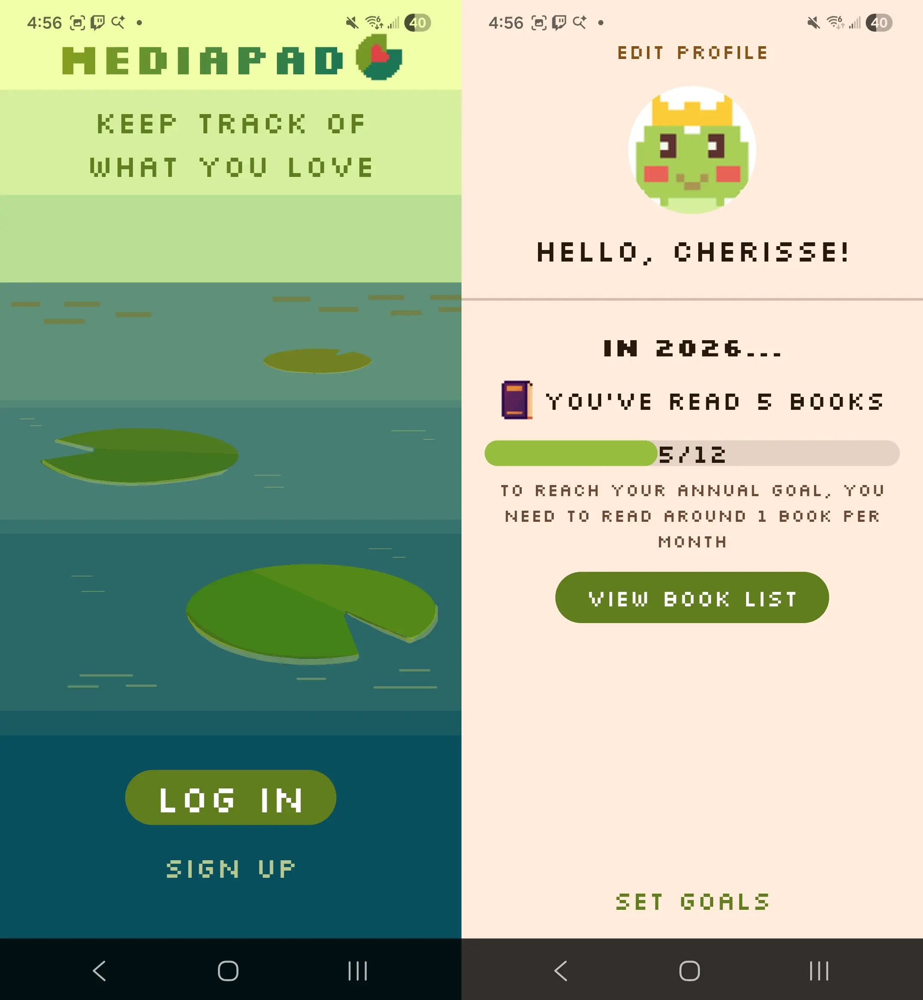

MediaPad App
Roles
Tech Stack
A solo final project for a Mobile App Development class. MediaPad is an Android app that allows users to create and log in to accounts via Firebase. They can search for books (using the Google Books API) to add and make lists of books they have read and want to read. They can also set reading goals on a dashboard that calculates approximately how many books they need to read to reach their annual goal. All data is stored on the cloud with Firestore.
This may be expanded in the future, as the original idea would also allow the user to do the above functionality with movies.
This project gave me experience with:
- Creating mobile apps in Dart/Flutter
- Writing unit tests and debugging on Android
- Planning app architecture and handling app state
- Making queries to an API
- Transferring API data to a custom model
- Enabling users to create accounts via Firebase
- Saving data on the cloud using Firestore
